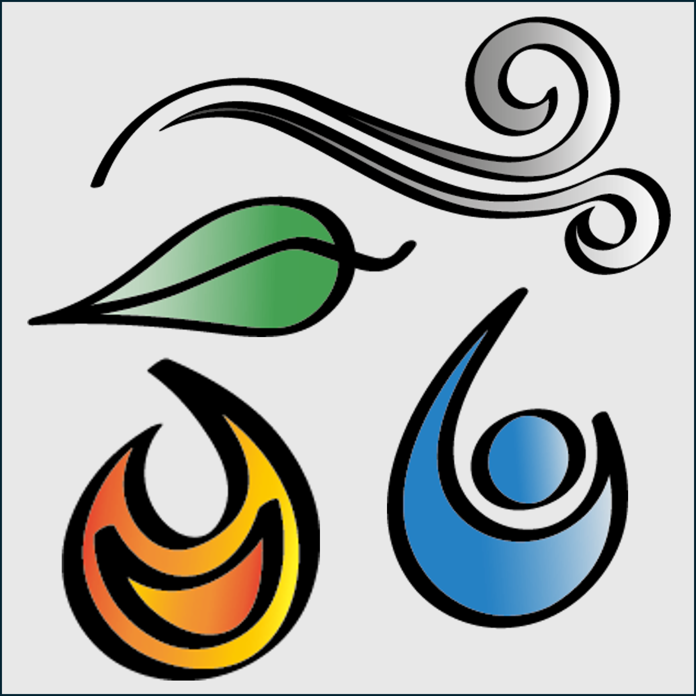

Les Valeurs de Ty Zephyrria
Cet espace est dédié à ce qui anime ma créativité et mon entreprise.
La Curiosité
L'exploration constante de nouvelles techniques et de nouveaux supports pour offrir des créations uniques.
L'Authenticité
Un travail artisanal fait main avec passion, respectant les matières et l'inspiration du moment.
Le Partage
Transmettre un souffle de créativité et d'émerveillement à travers chaque facette de mon univers.

Une vision, une passion
"Ne rêve pas ta Vie, vis tes rêves!" (A.de St Exupéry)
Au-delà de la simple création, Ty Zephyrria est le reflet d'un engagement profond envers l'art et l'humain. Chaque pièce, chaque photographie et chaque dessin vectoriel est conçu pour raconter une histoire unique.
Mon objectif est d'apporter un souffle de légèreté et d'élégance dans votre quotidien, tout en valorisant le savoir-faire artisanal et la multipotentialité qui définit mon univers.
Passionnée et curieuse dans un certain nombre de domaines, notamment celui de la création, j'ai fondé Ty Zephyrria pour réunir mes différentes facettes artistiques et autres potentiels sous une même énergie.
Fascinée et inspirée par le monde animal et la nature, il m'était assez évident d'en faire mon fil conducteur avec les 4 éléments:
- Le feu pour l'ardeur, la curiosité et la passion artistique
- L'air pour l'intuition et l'inspiration de la liberté cérébrale
- La terre pour l'enracinement logique, la cohérence et la fonctionnalité dans un environnement concret
- L'eau pour la fluidité, la cohésion et la bienveillance de l'altruisme
Mon parcours de 15 ans dans l'image me permet aujourd'hui de vous accompagner avec une vision globale, qu'il s'agisse de créer un bijou qui vous ressemble ou de construire votre propre identité visuelle personnelle ou professionnelle.
Le tout dans une énergie vivante authentique et en perpétuel émerveillement telle une Divergeante ou un Caméléon (^^ pardon, j'adore ce film et cette série, c'était trop tentant...).